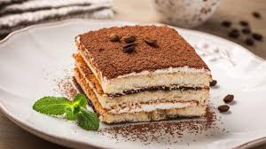

Ingredientes:
- 200 g de queso mascarpone
- 3 huevos
- 3 cucharadas de azúcar
- 1 taza de café fuerte
- 200 g de bizcochos de soletilla
- Cacao en polvo para espolvorear
Preparación:
- Separa las claras de las yemas y bate las yemas con el azúcar hasta que la mezcla esté cremosa.
- Agrega el queso mascarpone y mezcla bien.
- Bate las claras a punto de nieve e incorpóralas suavemente a la mezcla.
- Moja los bizcochos en el café y colócalos en un molde.
- Alterna capas de bizcochos y crema de mascarpone.
- Espolvorea con cacao en polvo y refrigera por al menos 4 horas.
- ¡Disfruta de tu delicioso tiramisú! 🍰